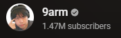

ทำไมต้องรู้ ?
“เงิน” เป็นสื่อกลางในการแลกเปลี่ยน เป็นเครื่องวัดค่าสิ่งของต่าง ๆ และมีส่วนช่วยอำนวยความสะดวกในการ
หาซื้อสิ่งของจำเป็นสำหรับใช้ในชีวิตประจำวัน นอกจากนี้ยังสามารถใช้สะสมเพื่อเพิ่มค่าในอนาคตได้ด้วย
“การวางแผนการเงิน” เป็นทักษะที่จำเป็นสำหรับทุกคน หากเราวางแผนการเงินอย่างเหมาะสมก็จะช่วยให้เราบรรลุเป้าหมายชีวิตอย่างที่คาดหวัง
เพราะ “เงิน” มีบทบาทสำคัญไม่เฉพาะการเป็นสื่อกลางในการแลกเปลี่ยน
เป็นเครื่องวัดค่าสิ่งของต่าง ๆ เท่านั้น แต่เงินยังสามารถสะสมเพื่อเพิ่มค่าได้ในอนาคต
“การวางแผนการเงิน” อย่างเหมาะสมจะช่วยให้เราสามารถจัดการกับเรื่องเงิน ๆ ทอง ๆ ได้อย่างมีประสิทธิภาพ
ซึ่งเป็นสิ่งสำคัญในการบรรลุเป้าหมายชีวิต
และเพราะ “เงิน” เข้ามามีส่วนช่วยอำนวยความสะดวกในการหาซื้อสิ่งของจำเป็นสำหรับใช้ในชีวิตประจำวัน
เราจึงควรให้ความสำคัญกับการวางแผนการเงินเหมือนเป็นกิจกรรมหนึ่งในชีวิตประจำวัน
เพื่อให้มีชีวิตที่ดี และมีความสุขในบั้นปลายชีวิต
10 นิสัยยอดแย่ทางการเงิน... ที่ต้องรีบแก้ไข
1.ไม่วางแผนการเงิน ไม่มีเป้าหมายทางการเงินทั้งในระยะสั้นและระยะยาว
2.ใช้จ่ายแบบไม่วางแผน ทั้งการจ่ายซื้อของชิ้นใหญ่และซื้อของกินของใช้ในชีวิตประจำวัน
3.ไม่รู้ว่ามีเงินสดเท่าไร เพราะได้เงินมาก็ใช้ไป เงินหมดก็กด ATM ไปเรื่อย ๆ
4.ไม่รู้ว่าใช้เงินเดือนละเท่าไร ไม่รู้ว่าใช้จ่ายเป็นค่าอะไรบ้าง
5.เหนียวหนี้ โดยเฉพาะหนี้บัตรเครดิต เพราะการจ่ายหนี้ขั้นต่ำจะทำให้ต้องจ่ายดอกเบี้ยมหาศาล
6.ใช้ก่อนเก็บ เพราะมักลงเอยด้วยการใช้เงินจนหมดไม่เหลือเก็บ
7.ใช้จ่ายเงินเกินตัว มีรสนิยมสูงเกินรายได้ จนอาจทำให้มีภาระหนี้สินตามมา
8.ไม่สนใจดอกเบี้ย ค่าปรับหรือค่าธรรมเนียมที่ต้องจ่าย
9.ลงทุนแบบไม่มีความรู้ ลงทุนตามข่าว ตามกระแส ไม่มีความรู้ความเข้าใจเรื่องการลงทุนที่ดีพอ
10.ไม่มีการจัดสรรสินทรัพย์หรือ Asset Allocation ซึ่งเป็นหัวใจสำคัญในการเพิ่มพูนความมั่งคั่ง
ขอบคุณข้อมูลจาก set.or.th
เรื่องเงินที่รู้ไว้แล้วน่าจะดีกับชีวิต (มั้ง)
ขอบคุณข้อมูลจากช่อง
เคล็ดลับเพื่อความมั่นคงทางการเงิน
ควรวางแผนการใช้จ่ายให้เหมาะสมกับรายรับ โดยพิจารณาว่าค่าใช้จ่ายที่จำเป็นมีอะไรบ้าง แล้วกันรายรับส่วนหนึ่งไว้สำหรับเป็นเงินออมและค่าใช้จ่ายที่จำเป็นก่อน
หากพบว่ารายรับไม่เพียงพอก็ควรหาทางลดรายจ่ายหรือเพิ่มรายได้
ควรเตรียมรับมือกับความไม่แน่นอน
มีเงินออมเผื่อฉุกเฉิน 3 - 6 เท่าของรายจ่ายจำเป็นและภาระผ่อนหนี้ต่อเดือน
ตรวจสอบสวัสดิการและประกันสุขภาพที่มีอยู่ว่าครอบคลุมแค่ไหน หากไม่เพียงพอ การทำประกันสุขภาพเพิ่มเติมก็อาจเป็นอีกทางเลือกหนึ่ง
พิจารณาเรื่องความไม่แน่นอนของรายได้ในอนาคต ก่อนตัดสินใจกู้ยืมเงินทุกครั้ง
อาจหาแหล่งรายได้เสริมหรือนำสินทรัพย์ที่มีไปลงทุนให้งอกเงยขึ้น